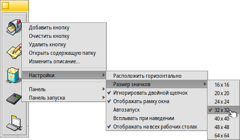

Русский
Русский Català
Català Deutsch
Deutsch English
English Español
Español Français
Français Italiano
Italiano Magyar
Magyar Polski
Polski Português
Português Português (Brazil)
Português (Brazil) Română
Română Slovenčina
Slovenčina Suomi
Suomi Svenska
Svenska 中文 ［中文］
中文 ［中文］ Українська
Українська 日本語
日本語Перевод этой страницы еще не завершен. Пока это не произойдет, незавершенные части будут на английском.
 Панель запуска (LaunchBox)
Панель запуска (LaunchBox)
| Расположение в Deskbar: | ||
| Расположение в Tracker: | /boot/system/apps/LaunchBox | |
| Настройки хранятся по адресу: | ~/config/settings/LaunchBox/* |
Одина или несколько Панелей запуска могут быть запущены для организации быстрого доступа к вашим избранным приложениям и документам. Вы сами решаете, будут ли они отображаться на всех рабочих столах, либо только на текущем. Также их можно использовать для быстрого открытия документов в определённом приложении, например, можно перетащить HTML файл на текстовый редактор в Панеле запуска, чтобы открыть его в нём, а не в его предпочтительном приложении - браузере.
Все опции доступны из контекстного меню:
| Добавляет пустую кнопку. | |||
| Делает кнопку пустой. | |||
| Удаляет кнопку. | |||
| Hovering the mouse over an icon shows a tooltip with the file's name and, in case of an application, its short description if it differs from its name (see topic FileTypes). With this menu item you can customize the description for this tooltip. | |||
Меняет расположение кнопок на горизонтальное. Устанавливает размер иконок от 16 до 64 пикселей. Запускает объект только один раз даже когда клик произведён, возможно случайно, дважды. Отображает рамку вокруг окна. Панель запуска показывается поверх всех окон, если подвести мышь к краю экрана. Отображает Панель запуска на всех рабочих столах. | |||
Создает новую панель. Дублирует текущую панель. Закрывает текущую панель. | |||
Quits all LaunchBox pads. |